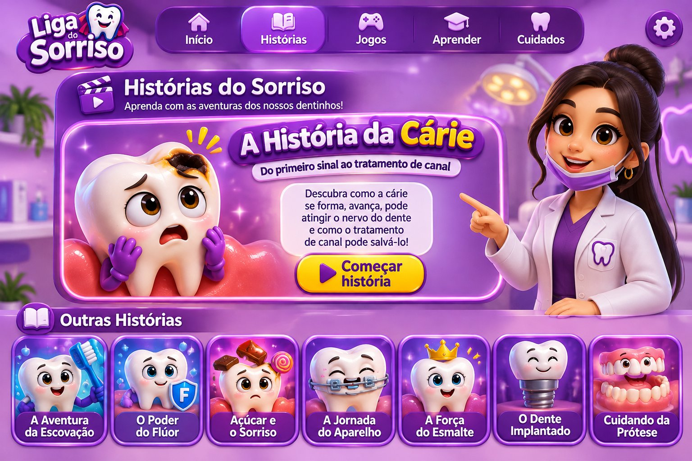
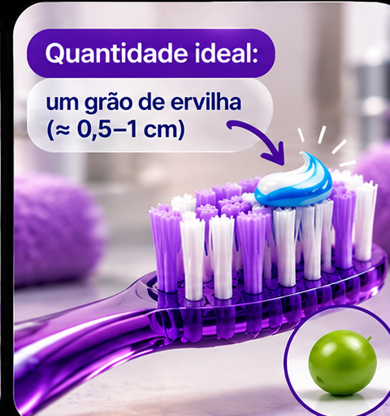
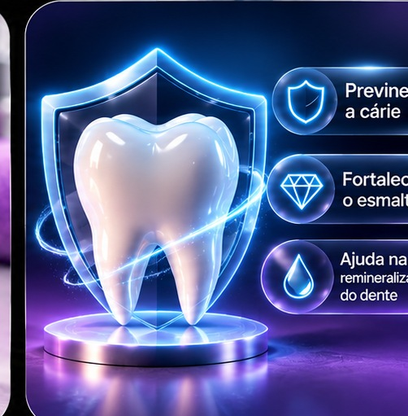

🎬 A História da Cárie
Acompanhe um dentinho em seis cenas: da placa bacteriana até o possível tratamento de canal.
Começar história →Histórias com dentinhos 3D, narração, brincadeiras e desafios para aprender a cuidar do sorriso.

Acompanhe um dentinho em seis cenas: da placa bacteriana até o possível tratamento de canal.
Começar história →Aprenda brincando com perguntas, desafios e um jogo de tabuleiro para até dois jogadores.
Jogar agora →
Descubra como limpar os dentes, usar fio dental e escolher creme dental com flúor.
Aprender →
As histórias são educativas. Adultos devem acompanhar crianças pequenas durante a escovação.